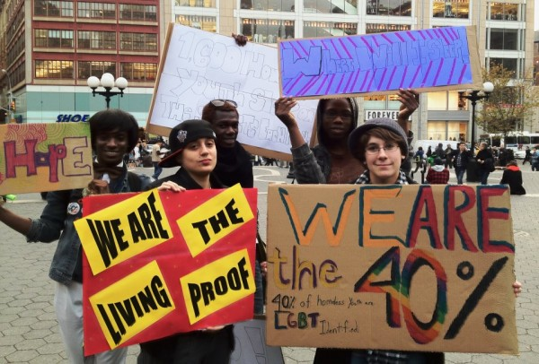
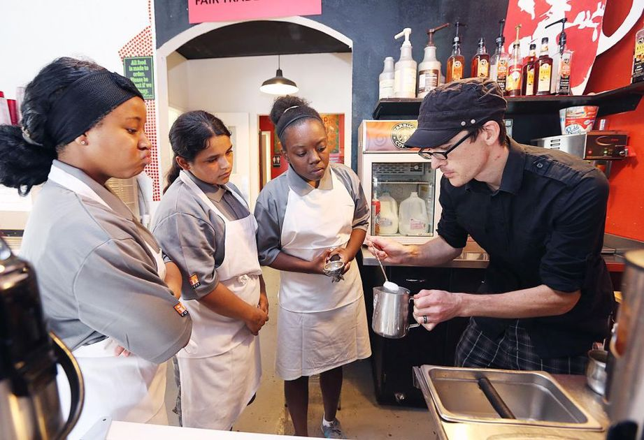
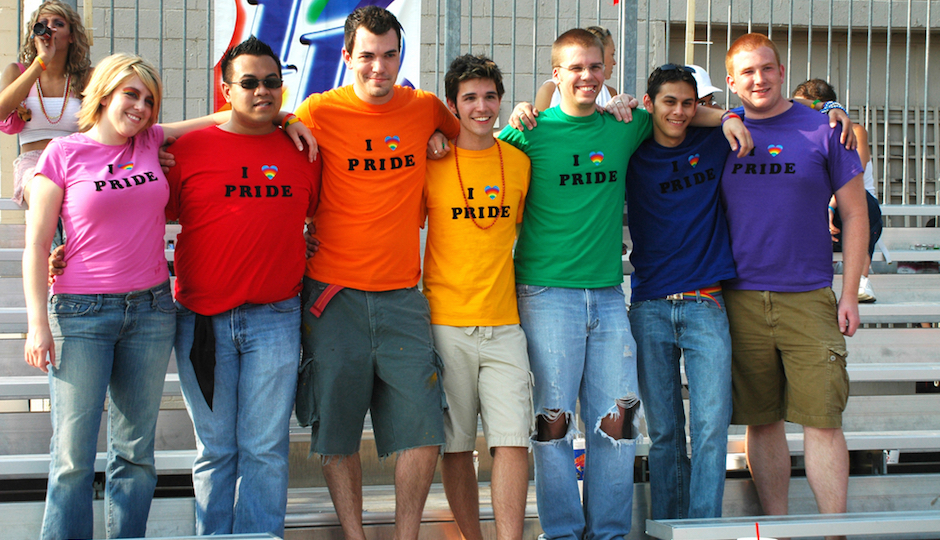

This Is What We Do
 Our community organizing work is focused on ensuring that communities around the country have the tools they need to prevent and address LGBT youth homelessness. We’re bringing together people from different sectors (education, juvenile justice, child welfare, faith, and libraries, to name a few) to figure out how to best address LGBT youth homelessness in our communities.
 Our goals are to identify promising practices for preventing LGBT youth homelessness and to increase the number of providers who can offer safe and affirming services if homelessness cannot be prevented. Through the development and dissemination of tools on the ground (such as the True Inclusion Assessment and the Youth Count Toolkit) remote technical assistance (like what we’re doing with the LGBTQ youth homelessness prevention initiative) and the facilitation of innovative partnerships, we are connecting individuals and communities with one another to build the movement to prevent and address LGBT youth homelessness.
 Knowledge is power, and there’s a lot we don’t yet know about lesbian, gay, bisexual, and transgender (LGBT) youth homelessness. Without accurate data, we can’t be certain that we’re actually solving anything. That’s where research comes in.
Through our research projects, we are building a body of knowledge about LGBT youth homelessness. Our research projects are informed by the service providers and young people with whom we work. Our goal is to impact policy and practice with our research, and to improve the daily lived experiences of LGBT youth and homeless youth service providers.